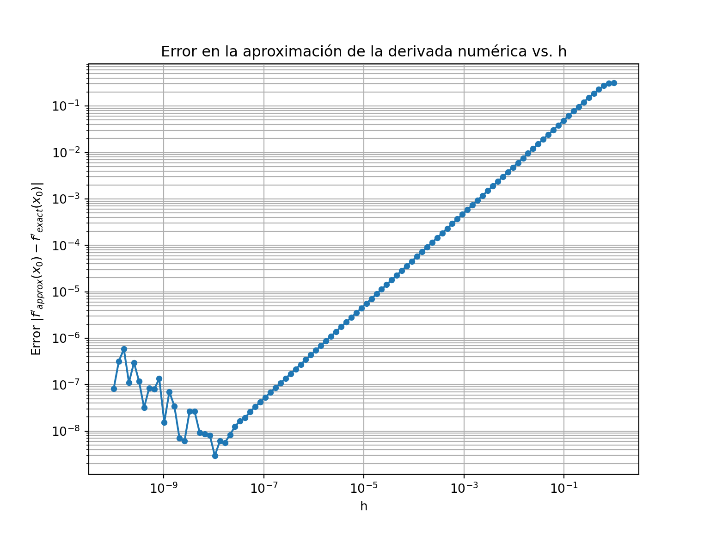
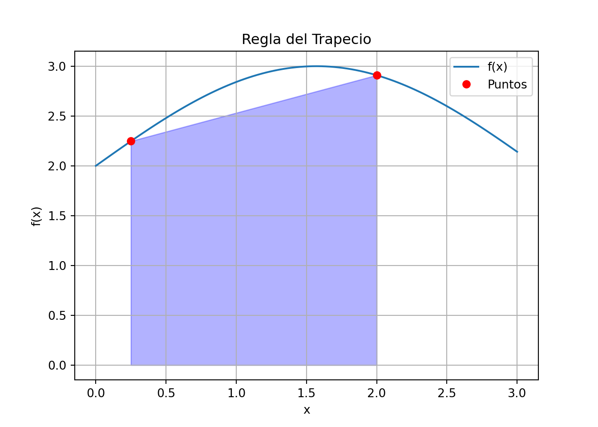
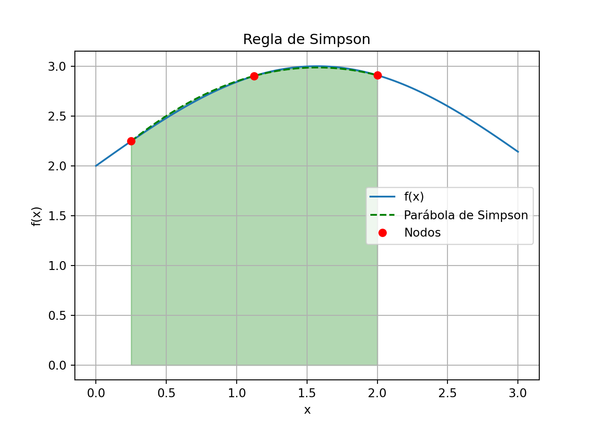

El flujo de calor en la interfaz suelo-aire puede calcularse con la ley de Faraday.
\[ q = -k\rho C\frac{\Delta T}{\Delta z} \]
Donde \(q\) = flujo de calor, \(k\) = coeficiente de difusividad térmica, \(\rho\) = la densidad del suelo, \(C\) = calor específico del suelo.
Situaciones en las cuales se requiere el uso de la diferenciación numérica, ocurren cuando el conjunto de datos está dado en forma discreta y cuando la función que se va a derivar es complicada, por lo que la derivación analítica es difícil, cuando no imposible.
Entonces, las soluciones numéricas son preferibles a las analíticas, siempre que la función sea fácil de evaluar.
Problemas que han sido estudiados, involucran en cierto modo el cálculo de la derivada de una función evaluada en un punto, como por ejemplo:
Hay distintas razones por la que la integración numérica se realiza, entre las cuales se encuentran:
El integrando \(f(x)\) puede ser conocido solamente en ciertos puntos, tales como: obtenidos por muestreo. Algunos sistemas encajados y otras aplicaciones informáticas pueden necesitar la integración numérica por esta razón.
Una fórmula para el integrando puede ser conocida, pero puede ser difícil o imposible de encontrar su antiderivada. Un ejemplo de tal integrando es \(f(x) = e^{-x^2}\), cuya antiderivada no se puede escribir en forma elemental.
Puede ser posible encontrar una antiderivada simbólica, pero puede ser más fácil computar una aproximación numérica que computar la antiderivada. Ese puede ser el caso si la antiderivada se da como una serie o producto infinita, o si su evaluación requiere una función especial la cual no está disponible.
La diferenciación numérica puede calcularse usando la definición de derivada en un punto \(x_0\).
\[ f'(x_0) = \lim_{x \to x_0} \dfrac{f(x) - f(x_0)}{x - x_0} = \lim_{h \to 0} \frac{f(x_0 + h) - f(x_0)}{h} \]
Una manera sencilla de aproximar \(f'(x_0)\) sería considerar el cociente incremental
\[ f'(x_0) \approx \frac{f(x_0 + h) - f(x_0)}{h} \]
Tomando una \(h\) pequeña. Si \(h > 0\) se llama fórmula de diferencia progresiva, si \(h < 0\) se llama fórmula de diferencia regresiva.
Por el Teorema de Taylor se sabe que:
\[ f(x_0 + h) = f(x_0) + hf'(x_0) + \frac{h^2}{2}f''(\xi(x)) \]
Donde \(\xi(x)\) es un número entre \(x_0\) y \(x_0 + h\).
Despejando a \(f'(x_0)\) obtenemos:
\[ f'(x_0) = \frac{f(x_0 + h) - f(x_0)}{h} - \frac{h}{2}f''(\xi(x)) \]
Entonces se puede aproximar \(f'(x_0)\) por \(\dfrac{f(x_0 + h) - f(x_0)}{h}\) con un error acotado por \(M|\frac{h}{2}|\) donde
\[ M=\max_{x\in(x_0,x_0+h)}|f''(x)| \]
Sea la función \(f(x)=e^{\sin x}\) con \(x_0=0\), y \(h=0.05\). Entonces:
\[ f'(x_0) \approx \dfrac{f(x_0 + h) - f(x_0)}{h} = \dfrac{f(0.05) - f(0)}{0.05} = \frac{e^{\sin(0.05)} - e^{\sin(0)}}{0.05} = \frac{1.05124919 - 1}{0.05} = 1.024983957 \]
El valor exacto de \(f'(x_0)\) es:
\[ f'(0) = \left.\frac{d}{dx}e^{\sin x}\right|_{x=0} = e^{\sin(0)}\cos(0) = 1 \]
El error “real” cometido es:
\[ Error = \left|1 - 1.024983957\right| = 0.024983957 \]
Hallando la cota del error:
\[ M=\max_{x\in(0,0.05)}|f''(x)| \]
\[ f''(x) = e^{\sin x} (\cos^2 x - \sin x) \]
En el intervalo \([0, 0.05]\), \(f''(x)\) es positiva. El máximo se encuentra en \(x=0\) o \(x=0.05\).
En \(x=0\): \(f''(0) = e^{\sin(0)} (\cos^2(0) - \sin(0)) = 1 (1 - 0) = 1\)
En \(x=0.05\): \[ f''(0.05) \approx e^{0.05} (0.99875^2 - 0.05) \approx 1.05127 (0.9975 - 0.05) \approx 1.05127 (0.9475) \approx 0.995 \]
El máximo es: \(\max |f''(\xi)| = f''(0) = \mathbf{1}\).
La Cota de Error: \[\begin{eqnarray*} & |E| \le \frac{h}{2} \max |f''(\xi)| &\\ & |E| \le \frac{0.05}{2} \times 1 &\\ & |E| \le 0.025 & \end{eqnarray*}\]

Se puede ver que los errores disminuyen hasta un cierto valor crítico \(h_{min}\) luego del cual los errores aumentan según \(h\) disminuye.
La figura ilustra los efectos de redondeo debido a la aritmética finita, los cuales se hacen significativos para \(h\) pequeño y pueden afectar a cualquier fórmula numérica para aproximar la derivada.
Una fórmula con un grado de aproximación digamos \(O(h^2)\) es preferible a una de \(O(h)\) ya que los errores (teóricos) tienden a cero más rápido y así la \(h\) no se tiene que hacerse tan pequeña reduciendo así los efectos de los errores por la aritmética finita.
Es posible, mejorar la precisión de la siguiente manera: Sean los polinomios de Taylor de las funciones \(f(x_0 + h)\) y \(f(x_0 - h)\), suponiendo que la función es al menos tres veces derivable:
\[\begin{align*} f(x_0 + h) & = f(x_0) + hf'(x_0) + \dfrac{h^2}{2}f''(x_0) + \dfrac{h^3}{6}f'''(\xi_1)\\ f(x_0 - h) & = f(x_0) - hf'(x_0) + \dfrac{h^2}{2}f''(x_0) - \dfrac{h^3}{6}f'''(\xi_2) \end{align*}\]
Restando ambas ecuaciones y resolviendo para \(f'(x_0)\):
\[\begin{align*} f(x_0 + h) - f(x_0 - h) & = 2hf'(x_0) + \dfrac{h^3}{6}f'''(\xi_1) - \dfrac{h^3}{6}f'''(\xi_2)\\ f'(x_0) & = \dfrac{f(x_0 + h) - f(x_0 - h)}{2h} - \dfrac{h^2}{12}(f'''(\xi_1) + f'''(\xi_2)) \end{align*}\]
Como \(f \in C^3[x_0 - h, x_0 + h]\), entonces por el teorema del valor intermedio existe \(\xi \in [x_0 - h, x_0 + h]\) tal que,
\[\begin{align*} f'''(\xi) & = \dfrac{f'''(\xi_1) + f'''(\xi_2)}{2} \end{align*}\]
Por lo tanto,
\[\begin{align*} f'(x_0) & = \dfrac{f(x_0 + h) - f(x_0 - h)}{2h} - \dfrac{h^2}{6}f'''(\xi) \end{align*}\]
A esta expresión se le llama f́órmula de diferencia centrada, el orden de precisión es 2, mientras que el error de truncamiento es \(O(h^2)\).
Teorema (fórmula de \(n\) puntos)
Sea \(f\) una función de clase \(C^{n+1}[a, b]\) y \(\{x_1, x_2,\ldots, x_n\}\) \(n\) puntos distintos en dicho intervalo. Si llamamos \(L_i(x)\) a los correspondientes polinomios elementales de Lagrange de grado \(n - 1\), entonces existe un punto \(\xi \in [a, b]\) tal que
\[ f'(x_k) = \sum_{i=1}^{n} f(x_i) L'_i(x) + \dfrac{f^{(n)}(\xi)}{n!}\prod_{i=1,i\neq k}^{n}(x_k-x_i) \]
A la expresión anterior se le conoce como fórmula de \(n\) puntos para aproximar \(f'(x_k)\).
Consideremos el caso particular en que \(n=2\) donde se tienen tres puntos \(x_0\), \(x_1\) y \(x_2\).
Los polinomios de Lagrange y sus derivadas son los siguientes:
\[\begin{align*} L_0(x) = \frac{(x-x_1)(x-x_2)}{(x_0-x_1)(x_0-x_2)}, &\Rightarrow L_0'(x) = \dfrac{2x-x_1-x_2}{(x_0-x_1)(x_0-x_2)}\\ L_1(x) = \frac{(x-x_0)(x-x_2)}{(x_1-x_0)(x_1-x_2)}, &\Rightarrow L_1'(x) = \dfrac{2x-x_0-x_2}{(x_1-x_0)(x_1-x_2)}\\ L_2(x) = \frac{(x-x_0)(x-x_1)}{(x_2-x_0)(x_2-x_1)}, &\Rightarrow L_2'(x) = \dfrac{2x-x_0-x_1}{(x_2-x_0)(x_2-x_1)} \end{align*}\]
Por lo tanto la expresión de la fórmula para \(f'(x_k)\) de \(n\) puntos para \(n=2\) es,
\[\begin{align*} f'(x_k) & = \sum_{i=0}^{2} f(x_i) L'_i(x) + \dfrac{f^{'''}(\xi_k)}{3!}\prod_{i=0,i\neq k}^{2}(x_k-x_i)\\ f'(x_k) & = \dfrac{f(x_0)(2x-x_1-x_2)}{(x_0-x_1)(x_0-x_2)} + \dfrac{f(x_1)(2x-x_0-x_2)}{(x_1-x_0)(x_1-x_2)}\\ & + \dfrac{f(x_2)(2x-x_0-x_1)}{(x_2-x_0)(x_2-x_1)}+\dfrac{f'''(\xi_k)}{6}\prod_{i=0,i\neq k}^{2}(x_k-x_i) \end{align*}\]
Si tomamos \(x_0 = x_1 - h\), \(x_1=x_1\) y \(x_2 = x_1 + h\) para aproximar \(f'(x_1)\) con \(h > 0\), queda que:
\[\begin{align*} f'(x_1) & = \dfrac{f(x_0)(2x_1-x_1-x_2)}{(x_0-x_1)(x_0-x_2)} + \dfrac{f(x_1)(2x_1-x_0-x_2)}{(x_1-x_0)(x_1-x_2)}\\ & + \dfrac{f(x_2)(2x_1-x_0-x_1)}{(x_2-x_0)(x_2-x_1)}+\dfrac{f'''(\xi_1)}{6}\prod_{i=0,i\neq k}^{2}(x_k-x_i)\\ f'(x_1) & = \dfrac{f(x_1-h)(2x_1-x_1-x_1-h)}{(x_1-h-x_1)(x_1-h-x_1-h)} + \dfrac{f(x_1)(2x_1-x_1+h-x_1-h)}{(x_1-x_1-h)(x_1-x_1-x_1-h)}\\ & + \dfrac{f(x_1+h)(2x_1-x_1-h-x_1)}{(x_1+h-x_1-h)(x_1+h-x_1)}+\dfrac{f'''(\xi_1)}{6}\prod_{i=0,i\neq k}^{2}(x_k-x_i)\\ f'(x_1) & = \dfrac{f(x_1-h)(-h)}{(-h)(-h-h)} + \dfrac{f(x_1)(0)}{(-h)(-h-h)}\\ & + \dfrac{f(x_1+h)(-h)}{(h+h)(h)}+\dfrac{f'''(\xi_1)}{6}(x_1-x_0)(x_1-x_2)\\ f'(x_1) & = \dfrac{f(x_1-h)}{-2h} + \dfrac{f(x_1+h)}{2h}+\dfrac{f'''(\xi_1)}{6}(x_1-x_1-h)(x_1-x_1+h)\\ f'(x_1) & = \dfrac{f(x_1+h)-f(x_1-h)}{2h} -\dfrac{f'''(\xi_1)}{6}h^2\\ \end{align*}\]
Si aplicamos la fórmula de \(n\) puntos para \(n=2\) a \(f(x)\) en \(x_0\) y \(x_2\), obtenemos laa siguientes fórmulas:
\[\begin{align*} f'(x_0) & = \dfrac{1}{h}\left(-\dfrac{3}{2}f(x_0)+2f(x_1)-\dfrac{1}{2}f(x_2)\right)+\dfrac{f'''(\xi_0)}{3}h^2 \quad \text{Fórmula Progresiva}\\ f'(x_2) & = \dfrac{1}{h}\left(\dfrac{1}{2}f(x_0)-2f(x_1)+\dfrac{3}{2}f(x_2)\right)+\dfrac{f'''(\xi_2)}{3}h^2 \quad \text{Fórmula Regresiva}\\ \end{align*}\]
Otra manera de deducir fórmulas de derivación numérica es usar la fórmula de Taylor.
Veamos cómo se obtiene la fórmula de cinco puntos respecto del punto medio usando desarrollos de Taylor.
Si desarrollamos por Taylor la función \(f\) alrededor de \(x_0\) en los puntos \(x_0-2h\), \(x_0-h\), \(x_0+h\) y \(x_0+2h\), se obtiene:
\[\begin{align*} f(x_0-2h) & = f(x_0) - 2hf'(x_0) + \dfrac{4h^2}{2}f''(x_0) - \dfrac{8h^3}{6}f'''(x_0)\\ & + \dfrac{16h^4}{24}f^{(4)}(x_0)-\dfrac{32h^5}{120}f^{(5)}(\xi_1)\\ f(x_0-h) & = f(x_0) - hf'(x_0) + \dfrac{h^2}{2}f''(x_0) - \dfrac{h^3}{6}f'''(x_0)\\ & + \dfrac{h^4}{24}f^{(4)}(x_0)-\dfrac{h^5}{120}f^{(5)}(\xi_2)\\ f(x_0+h) & = f(x_0) + hf'(x_0) + \dfrac{h^2}{2}f''(x_0) + \dfrac{h^3}{6}f'''(x_0)\\ & + \dfrac{h^4}{24}f^{(4)}(x_0)+\dfrac{h^5}{120}f^{(5)}(\xi_3)\\ f(x_0+2h) & = f(x_0) + 2hf'(x_0) + \dfrac{4h^2}{2}f''(x_0) + \dfrac{8h^3}{6}f'''(x_0)\\ & + \dfrac{16h^4}{24}f^{(4)}(x_0)+\dfrac{32h^5}{120}f^{(5)}(\xi_4) \end{align*}\]
donde \(\xi_1,\xi_2,\xi_3,\xi_4\in(x_0-2h,x_0+2h)\).
El siguiente paso es hallar unos coeficientes \(A_1\), \(A_2\), \(A_3\), \(A_4\) y \(A_5\) por los que hay que multiplicar las expresiones de \(f(x_0-2h)\), \(f(x_0-h)\), \(f(x_0)\), \(f(x_0+h)\) y \(f(x_0+2h)\)con el objetivo de eliminar los términos en \(h^0\), \(h^2\), \(h^3\) y \(h^4\) y que solo quede el término en \(hf'(x0)\) para obtener una fórmula aproximada de \(f'(x0)\):
\[\begin{align*} \color{red}{A_1}\cdot\left(\dfrac{}{}f(x_0-2h)\right. & = f(x_0) - 2hf'(x_0) + \dfrac{4h^2}{2}f''(x_0) - \dfrac{8h^3}{6}f'''(x_0)\\ & + \left.\dfrac{16h^4}{24}f^{(4)}(x_0)-\dfrac{32h^5}{120}f^{(5)}(\xi_1)\right)\\ \color{red}{A_2}\cdot\left(\dfrac{}{}f(x_0-h)\right. & = f(x_0) - hf'(x_0) + \dfrac{h^2}{2}f''(x_0) - \dfrac{h^3}{6}f'''(x_0)\\ & + \left.\dfrac{h^4}{24}f^{(4)}(x_0)-\dfrac{h^5}{120}f^{(5)}(\xi_2)\right)\\ \color{red}{A_3}\cdot(f(x_0)&=f(x_0))\\ \color{red}{A_4}\cdot\left(\dfrac{}{}f(x_0)\right. & = f(x_0) + hf'(x_0) + \dfrac{h^2}{2}f''(x_0) + \dfrac{h^3}{6}f'''(x_0)\\ & + \left.\dfrac{h^4}{24}f^{(4)}(x_0)+\dfrac{h^5}{120}f^{(5)}(\xi_3)\right)\\ \color{red}{A_5}\cdot\left(\dfrac{}{}f(x_0+h)\right. & = f(x_0) + 2hf'(x_0) + \dfrac{4h^2}{2}f''(x_0) + \dfrac{8h^3}{6}f'''(x_0)\\ & + \left.\dfrac{16h^4}{24}f^{(4)}(x_0)+\dfrac{32h^5}{120}f^{(5)}(\xi_4)\right) \end{align*}\]
El coeficiente correspondiente a \(f(x_0)\) es \(A_1+A_2+A_3+A_4+A_5\).
El coeficiente correspondiente a \(f''(x_0)\) es \(2A_1+\frac{1}{2}A_2+\frac{1}{2}A_4+2A_5\).
El coeficiente correspondiente a \(f'''(x_0)\) es \(-\frac{4}{3}A_1-\frac{1}{6}A_2+\frac{1}{6}A_4+\frac{4}{3}A_5\).
El coeficiente correspondiente a \(f^{(4)}(x_0)\) es \(\frac{2}{3}A_1+\frac{1}{24}A_2+\frac{1}{24}A_4+\frac{2}{3}A_5\).
Con la idea de eliminar los términos en \(f(x_0)\), \(f''(x_0)\), \(f'''(x_0)\) y \(f^{(4)}(x_0)\), se debe resolver el sistema de ecuaciones:
\[\begin{align*} A_1+A_2+A_3+A_4+A_5 & = 0\\ 2A_1+\frac{1}{2}A_2+\frac{1}{2}A_4+2A_5 & = 0\\ -\frac{4}{3}A_1-\frac{1}{6}A_2+\frac{1}{6}A_4+\frac{4}{3}A_5 & = 0\\ \frac{2}{3}A_1+\frac{1}{24}A_2+\frac{1}{24}A_4+\frac{2}{3}A_5 & = 0 \end{align*}\]
Este sisstema es compatible indeterminado, ya que hay 4 ecuaciones y 5 incógnitas. Se puede agregar una quinta ecuacion exigiendo que el coeficiente de \(f'(x_0)\) sea 1: \[ -2A_1-A_2+A_4+2A_5=1 \]
Al resolver el sistema de ecuaciones, se obtiene que:
\[\begin{align*} A_1 & = \dfrac{1}{12}\\ A_2 & = -\dfrac{2}{3}\\ A_3 & = 0\\ A_4 & = \dfrac{2}{3}\\ A_5 & = -\dfrac{1}{12} \end{align*}\]
Entonces \(A_1\cdot f(x_0-2h)+A_2\cdot f(x_0-h)+A_3\cdot f(x_0)+A_4\cdot f(x_0+h)+A_5\cdot f(x_0+2h)\) vale:
\[\begin{align*} \dfrac{1}{12}\cdot f(x_0-2h)-\dfrac{2}{3}\cdot f(x_0-h)+\dfrac{2}{3}\cdot f(x_0+h)-\dfrac{1}{12}\cdot f(x_0+2h) \\ = f'(x_0)h + \dfrac{h^5}{120}\left(-\dfrac{32}{12}f^{(5)}(\xi_1) + \dfrac{2}{3}f^{(5)}(\xi_2) + \dfrac{2}{3}f^{(5)}(\xi_3) - \dfrac{32}{12}f^{(5)}(\xi_4) \right) \end{align*}\]
Por el teorema de Bolzano, se tiene que:
\[\begin{align*} & \dfrac{1}{12}\cdot f(x_0-2h)-\dfrac{2}{3}\cdot f(x_0-h)+\dfrac{2}{3}\cdot f(x_0+h)-\dfrac{1}{12}\cdot f(x_0+2h) \\ & = f'(x_0)h - \dfrac{h^5}{120}4f^{(5)}(\xi) \end{align*}\]
Y despejando \(f'(x_0)\) se obtiene:
\[\begin{align*} f'(x_0) & = \dfrac{f(x_0-2h)-8f(x_0-h)+8f(x_0+h)-f(x_0+2h)}{12h}+\dfrac{h^4}{30}f^{(5)}(\xi) \end{align*}\]
Lo anterior se puede generalizar para obtener una fórmula de \(n\) puntos para \(f^{(k)}(x_0)\). Calculemos la fórmula de \(n\) puntos para \(f''(x_0)\).
Sean los puntos \(x_0-2h\), \(x_0-h\), \(x_0+h\) y \(x_0+2h\), empleando desarrollos de Taylor alrededor de \(x_0\) en los puntos \(x_0-2h\), \(x_0-h\), \(x_0+h\) y \(x_0+2h\), como en el caso anterior.
\[\begin{align*} f(x_0-2h) & = f(x_0) - 2hf'(x_0) + \dfrac{4h^2}{2}f''(x_0) - \dfrac{8h^3}{6}f'''(x_0)\\ & + \dfrac{16h^4}{24}f^{(4)}(x_0)-\dfrac{32h^5}{120}f^{(5)}(x_0)+\dfrac{64h^6}{720}f^{(6)}(\xi_1)\\ f(x_0-h) & = f(x_0) - hf'(x_0) + \dfrac{h^2}{2}f''(x_0) - \dfrac{h^3}{6}f'''(x_0)\\ & + \dfrac{h^4}{24}f^{(4)}(x_0)-\dfrac{h^5}{120}f^{(5)}(x_0)+\dfrac{h^6}{720}f^{(6)}(\xi_2)\\ f(x_0+h) & = f(x_0) + hf'(x_0) + \dfrac{h^2}{2}f''(x_0) + \dfrac{h^3}{6}f'''(x_0)\\ & + \dfrac{h^4}{24}f^{(4)}(x_0)+\dfrac{h^5}{120}f^{(5)}(x_0)+\dfrac{h^6}{720}f^{(6)}(\xi_3)\\ f(x_0+2h) & = f(x_0) + 2hf'(x_0) + \dfrac{4h^2}{2}f''(x_0) + \dfrac{8h^3}{6}f'''(x_0)\\ & + \dfrac{16h^4}{24}f^{(4)}(x_0)+\dfrac{32h^5}{120}f^{(5)}(x_0)+\dfrac{64h^6}{720}f^{(6)}(\xi_4) \end{align*}\]
Buscamos constantes \(A_1\), \(A_2\), \(A_3\), \(A_4\) y \(A_5\) por los que hay que multiplicar las expresiones de \(f(x_0-2h)\), \(f(x_0-h)\), \(f(x_0+h)\) y \(f(x_0+2h)\) con el objetivo de eliminar los términos en \(h^0\), \(h\), \(h^3\) y \(h^4\) y que solo quede el término en \(h^2f''(x_0)\) para obtener una fórmula aproximada de \(f''(x_0)\):
\[\begin{align*} \color{red}{A_1}\cdot\left(\dfrac{}{}f(x_0-2h)\right. & = f(x_0) - 2hf'(x_0) + \dfrac{4h^2}{2}f''(x_0) - \dfrac{8h^3}{6}f'''(x_0)\\ & + \left.\dfrac{16h^4}{24}f^{(4)}(x_0)-\dfrac{32h^5}{120}f^{(5)}(\xi_1)\right)\\ \color{red}{A_2}\cdot\left(\dfrac{}{}f(x_0-h)\right. & = f(x_0) - hf'(x_0) + \dfrac{h^2}{2}f''(x_0) - \dfrac{h^3}{6}f'''(x_0)\\ & + \left.\dfrac{h^4}{24}f^{(4)}(x_0)-\dfrac{h^5}{120}f^{(5)}(\xi_2)\right)\\ \color{red}{A_3}\cdot(f(x_0)&=f(x_0))\\ \color{red}{A_4}\cdot\left(\dfrac{}{}f(x_0+h)\right. & = f(x_0) + hf'(x_0) + \dfrac{h^2}{2}f''(x_0) + \dfrac{h^3}{6}f'''(x_0)\\ & + \left.\dfrac{h^4}{24}f^{(4)}(x_0)+\dfrac{h^5}{120}f^{(5)}(\xi_3)\right)\\ \color{red}{A_5}\cdot\left(\dfrac{}{}f(x_0+2h)\right. & = f(x_0) + 2hf'(x_0) + \dfrac{4h^2}{2}f''(x_0) + \dfrac{8h^3}{6}f'''(x_0)\\ & + \left.\dfrac{16h^4}{24}f^{(4)}(x_0)+\dfrac{32h^5}{120}f^{(5)}(\xi_4)\right) \end{align*}\]
El coeficiente correspondiente a \(f(x_0)\) es: \(A_1+A_2+A_3+A_4+A_5\).
El coeficiente correspondiente a \(f'(x_0)h\) es: \(-2A_1-A_2+A_4+2A_5\).
El coeficiente correspondiente a \(f'''(x_0)h^3\) es: \(-\frac{4}{3}A_1-\frac{1}{6}A_2+\frac{1}{6}A_4+\frac{4}{3}A_5\).
El coeficiente correspondiente a \(f^{(4)}(x_0)h^4\) es: \(\frac{2}{3}A_1+\frac{1}{24}A_2+\frac{1}{24}A_4+\frac{2}{3}A_5\).
Con la idea de eliminar los términos en \(f(x_0)\), \(f'(x_0)\), \(f'''(x_0)\) y \(f^{(4)}(x_0)\), se debe resolver el sistema de ecuaciones:
\[\begin{align*} A_1+A_2+A_3+A_4+A_5 & = 0\\ -2A_1-A_2+A_4+2A_5 & = 0\\ -\frac{4}{3}A_1-\frac{1}{6}A_2+\frac{1}{6}A_4+\frac{4}{3}A_5 & = 0\\ \frac{2}{3}A_1+\frac{1}{24}A_2+\frac{1}{24}A_4+\frac{2}{3}A_5 & = 0 \end{align*}\]
Este sisstema es compatible indeterminado, ya que hay 4 ecuaciones y 5 incógnitas. Se puede agregar una quinta ecuacion exigiendo que el coeficiente de \(f''(x_0)h^2\) sea 1: \[ 2A_1+\frac{1}{2}A_2+\frac{1}{2}A_4+2A_5=1 \]
Al resolver el sistema de ecuaciones, se obtiene que:
\[\begin{align*} A_1 & = -\dfrac{1}{12}\\ A_2 & = \dfrac{4}{3}\\ A_3 & = -\dfrac{5}{2}\\ A_4 & = \dfrac{4}{3}\\ A_5 & = -\dfrac{1}{12} \end{align*}\]
Entonces \(A_1\cdot f(x_0-2h)+A_2\cdot f(x_0-h)+A_3\cdot f(x_0)+A_4\cdot f(x_0+h)+A_5\cdot f(x_0+2h)\) vale:
\[\begin{align*} -\dfrac{1}{12}\cdot f(x_0-2h)+\dfrac{4}{3}\cdot f(x_0-h)-\dfrac{5}{2}\cdot f(x_0)+\dfrac{4}{3}\cdot f(x_0+h)-\dfrac{1}{12}\cdot f(x_0+2h) \\ = f''(x_0)h^2 + \dfrac{h^6}{720}\left(-\dfrac{64}{12}f^{(6)}(\xi_1) + \dfrac{4}{3}f^{(6)}(\xi_2) + \dfrac{4}{3}f^{(6)}(\xi_3) - \dfrac{64}{12}f^{(6)}(\xi_4) \right) \end{align*}\]
Por el teorema de Bolzano, se tiene que:
\[\begin{align*} & -\dfrac{1}{12}\cdot f(x_0-2h)+\dfrac{4}{3}\cdot f(x_0-h)-\dfrac{5}{2}\cdot f(x_0)+\dfrac{4}{3}\cdot f(x_0+h)-\dfrac{1}{12}\cdot f(x_0+2h) \\ & = f''(x_0)h^2 - \dfrac{h^6}{+90}f^{(6)}(\xi) \end{align*}\]
Y despejando \(f''(x_0)\) se obtiene:
\[\begin{align*} f''(x_0) & = \dfrac{-f(x_0-2h)+16f(x_0-h)-30f(x_0)+16f(x_0+h)-f(x_0+2h)}{12h^2}+\dfrac{h^4}{90}f^{(6)}(\xi) \end{align*}\]
\[ I(f)=\int_{a}^{b} f(x) dx \]
La cuadratura o integración numérica consiste en obtener fórmulas aproximadas para calcular la integral \(I(f)\) de \(f\).
Estos métodos son de gran utilidad cuando la integral no se puede calcular por métodos analíticos.
\[\begin{align*} L_0(x) & = \dfrac{b-x}{b-a}\\ L_1(x) & = \dfrac{x-a}{b-a} \end{align*}\]
\[\begin{align*} A_0 = \int_{a}^{b} L_0(x) dx & = \int_{a}^{b} \dfrac{b-x}{b-a} dx = \dfrac{b-a}{2}\\ A_1 = \int_{a}^{b} L_1(x) dx & = \int_{a}^{b} \dfrac{x-a}{b-a} dx = \dfrac{b-a}{2} \end{align*}\]
\[\begin{align*} I(f) & = \int_{a}^{b} f(x) dx\\ & = \int_{a}^{b} L_0(x)f(x_0)dx + \int_{a}^{b}L_1(x)f(x_1)dx\\ & = A_0f(x_0) + A_1f(x_1)\\ & = \dfrac{b-a}{2}\left[f(x_0)+f(x_1)\right] \end{align*}\]

Otra forma de obtener una estimación más exacta de una integral es con el uso de polinomios de orden superior.
En este caso se aproxima la integral \(\int^b_af(x)dx\) por el área de la parábola que pasa por los puntos \((a,f(a))\), \((x1,f(x1))\) y \((b,f(b))\), siendo \(x_1\) el punto medio del intervalo \([a,b]\).
Así que \(h=\frac{b-a}{2}\), se tiene que:
\[\begin{align*} I(f) =\dfrac{h}{3}\left[f(a)+4f\left(\frac{a+b}{2}\right)+f(b)\right] \end{align*}\]

Cuando la distancia entre los nodos aumenta, el error que se comete, de forma general, también aumenta considerablemente.
Para conseguir una mejor aproximación, se puede dividir el intervalo \([a,b]\) en \(N\) subintervalos y utilizar una fórmula de cuadratura en cada uno de los subintervalos. Por linealidad de la integral, se tendrá
\[ a=x_0<x_1<\cdots<x_N=b \Rightarrow \int_a^bf(x)dx=\int_{x_0}^{x_1}f(x)dx+\int_{x_1}^{x_2}f(x)dx+\cdots+\int_{x_{N-1}}^{x_N}f(x)dx \]
\[\begin{align*} \int_a^bf(x)dx & = \int_{x_0}^{x_1}f(x)dx+\int_{x_1}^{x_2}f(x)dx+\cdots+\int_{x_{N-1}}^{x_N}f(x)dx\\ & = \dfrac{x_1-x_0}{2}\left[f(x_0)+f(x_1)\right]+\dfrac{x_2-x_1}{2}\left[f(x_1)+f(x_2)\right]+\cdots+\dfrac{x_N-x_{N-1}}{2}\left[f(x_{N-1})+f(x_N)\right]\\ & = \dfrac{h}{2}\left[f(x_0)+2f(x_1)+2f(x_2)+\cdots+2f(x_{N-1})+f(x_N)\right]\\ & = \dfrac{h}{2}\left[f(x_0)+f(x_N)+2\sum_{i=1}^{N-1}f(x_i)\right] \end{align*}\]
Cuando \(f \in \mathcal{C}^2([a, b])\), el error de esta regla satisface:
\[ R_T(f):= \int_a^bf(x)dx-I_T(f) = -\dfrac{(b-a)h^2}{12}f''(\xi) \] para algún \(\xi \in (a, b)\) y, por lo tanto, \[ |R_T(f)| \leq \dfrac{M_2}{12}(b-a)h^2, \qquad\text{ con } M_2:= \max_{x \in [a,b]}|f''(\xi)| \]
Calcular la integral de \(f(x)=x^3-6x^2+11x-6\) en el intervalo \([1.3, 1.8]\) aplicando la regla del trapecio simple y compuesto usando 6 subintervalos de igual longitud.
Se evalua la función en los extremos: \[\begin{align*} f(x_0) & = f(1.3) = 1.3^3 - 6(1.3)^2 + 11(1.3) - 6 = 0.357\\ f(x_1) & = f(1.8) = 1.8^3 - 6(1.8)^2 + 11(1.8) - 6 = 0.192 \end{align*}\]
Se calcula la distancia \(h=b-a = 1.8-1.3 = 0.5\)
Aplicamos la regla del trapecio: \[\begin{align*} I_T(f) & = \dfrac{h}{2}\left[f(x_0)+f(x_1)\right]\\ & = \dfrac{0.5}{2}\left[f(1.3)+f(1.8)\right]\\ & = \dfrac{0.5}{2}\left[0.357+0.192\right]\\ & = 0.13725 \end{align*}\]
Se divide el intervalo \([a,b]\) en \(N=6\) subintervalos y la longitud de cada subintervalo es \(h=\dfrac{b-a}{N}=\dfrac{1.8-1.3}{6}=0.0833\).
Se generan los nodos \[\begin{align*} x_0 & = 1.3\\ x_1 & =x_0+h=1.3833\\ x_2 & =x_1+h=1.4666\\ x_3 & =x_2+h=1.5499\\ x_4 & =x_3+h=1.6332\\ x_5 & =x_4+h=1.7165\\ x_6 & =x_5+h=1.8 \end{align*}\]
Se evalua la función en los nodos: \[\begin{align*} f(x_0) & = f(1.3) = 1.3^3 - 6(1.3)^2 + 11(1.3) - 6 = 0.357\\ f(x_1) & = f(1.3833) = 1.3833^3 - 6(1.3833)^2 + 11(1.3833) - 6 = 0.382157\\ f(x_2) & = f(1.4666) = 1.4666^3 - 6(1.4666)^2 + 11(1.4666) - 6 = 0.381639\\ f(x_3) & = f(1.5499) = 1.5499^3 - 6(1.5499)^2 + 11(1.5499) - 6 = 0.358914\\ f(x_4) & = f(1.6332) = 1.6332^3 - 6(1.6332)^2 + 11(1.6332) - 6 = 0.317449\\ f(x_5) & = f(1.7165) = 1.7165^3 - 6(1.7165)^2 + 11(1.7165) - 6 = 0.260714\\ f(x_6) & = f(1.8) = 1.8^3 - 6(1.8)^2 + 11(1.8) - 6 = 0.192 \end{align*}\]
Aplicamos la regla del trapecio compuesta: \[\begin{align*} I_T(f) & = \dfrac{h}{2}\left[f(x_0)+f(x_1)+2\sum_{i=1}^{N-1}f(x_{i})^{5}\right]\\ & = \dfrac{0.0833}{2}\left[f(1.3)+f(1.8)+2\left[f(1.3833)+f(1.4666)+f(1.5499)+f(1.6332)+f(1.7165)\right]\right]\\ & = \dfrac{0.0833}{2}\left[0.357+0.192+2\left[0.382157+0.381639+0.358914+0.317449+0.260714\right]\right]\\ & = 0.164548 \end{align*}\]
from sympy import symbols, integrate
x = symbols('x')
f = x**3 - 6*x**2 + 11*x - 6
integral_exacta = integrate(f, (x, 1.3, 1.8))
print(integral_exacta)## 0.165374999999999Los errores de ambas aproximaciones son:
# Error para la Regla del Trapecio Simple
I_T = 0.13725
error_T = abs(float(integral_exacta) - I_T)
print(f"Error para la Regla del Trapecio Simple: {error_T}")## Error para la Regla del Trapecio Simple: 0.02812499999999915# Error para la Regla del Trapecio Compuesta
I_T = 0.164548
error_T = abs(float(integral_exacta) - I_T)
print(f"Error para la Regla del Trapecio Compuesta: {error_T}")## Error para la Regla del Trapecio Compuesta: 0.0008269999999991617\[\begin{align*} \int_a^bf(x)dx & = \int_{x_0}^{x_2}f(x)dx+\int_{x_2}^{x_4}f(x)dx+\cdots+\int_{x_{m-2}}^{x_m}f(x)dx\\ & = \dfrac{1}{3}\dfrac{x_2-x_0}{2}\left[f(x_0)+4f(x_1)+f(x_2)\right]+\dfrac{1}{3}\dfrac{x_4-x_2}{2}\left[f(x_2)+4f(x_3)+f(x_4)\right]+\cdots\\ &+\dfrac{1}{3}\dfrac{x_m-x_{m-2}}{2}\left[f(x_{m-2})+4f(x_{m-1})+f(x_m)\right]\\ & = \dfrac{h}{6}\left[f(x_0)+4f(x_1)+2f(x_2)+\cdots+2f(x_{m-2})+4f(x_{m-1})+f(x_m)\right]\\ & = \dfrac{h}{6}\left[f(x_0)+f(x_m)+2\sum_{i=1}^{N-1}f(x_{2i})+4\sum_{i=1}^{N}f(x_{2i-1})\right] \end{align*}\]
Cuando \(f \in \mathcal{C}^4([a, b])\), el error de esta regla satisface:
\[ R_S(f):= \int_a^bf(x)dx-I_S(f) = -\dfrac{(b-a)h^4}{180}f^{(4)}(\xi) \] para algún \(\xi \in (a, b)\) y, por lo tanto, \[ |R_S(f)| \leq \dfrac{M_4}{180}(b-a)h^4, \qquad\text{ con } M_4:= \max_{x \in [a,b]}|f^{(4)}(\xi)| \]
Utilizar la regla de Simpson para aproximar \(\int_1^4\dfrac{1}{x}dx\)
Simpson simple
Se evalua la función en los extremos y en el punto medio del intervalo \([a,b]\). \[\begin{align*} f(x_0) & = f(1) = \dfrac{1}{1} = 1\\ f(x_1) & = f(4) = \dfrac{1}{4} = 0.25\\ f(x_m) & = f(\frac{a+b}{2}) = f(\frac{1+4}{2}) = f(2.5) = \dfrac{1}{2.5} = 0.4 \end{align*}\]
Se calcula la distancia \(h=\frac{b-a}{2} = \frac{4-1}{2} = \frac{3}{2} = 1.5\)
Aplicamos la regla de Simpson: \[\begin{align*} I_S(f) & = \dfrac{h}{3}\left[f(x_0)+4f(x_m)+f(x_1)\right]\\ & = \dfrac{1.5}{3}\left[f(1)+4f(2.5)+f(4)\right]\\ & = \dfrac{1.5}{3}\left[1+4\cdot \dfrac{1}{2.5}+\dfrac{1}{4}\right]\\ & = \dfrac{1.5}{3}\left[1+1.6+0.25\right]\\ & = \dfrac{1.5}{3}\left[2.85\right]\\ & = 1.425 \end{align*}\]
Simpson compuesto usando 6 subintervalos de igual longitud.
Se divide el intervalo \([a,b]\) en \(m=6\) subintervalos y la longitud de cada subintervalo es \(h=\dfrac{b-a}{m}=\dfrac{4-1}{6}=\dfrac{1}{2}\).
Se generan los nodos \[\begin{align*} x_0 & = 1\\ x_1 & =x_0+h=1+\dfrac{1}{2}=1.5\\ x_2 & =x_1+h=1.5+\dfrac{1}{2}=2\\ x_3 & =x_2+h=2+\dfrac{1}{2}=2.5\\ x_4 & =x_3+h=2.5+\dfrac{1}{2}=3\\ x_5 & =x_4+h=3+\dfrac{1}{2}=3.5\\ x_6 & =x_5+h=3.5+\dfrac{1}{2}=4 \end{align*}\]
Se evalua la función en los nodos: \[\begin{align*} f(x_0) & = f(1) = \dfrac{1}{1} = 1\\ f(x_1) & = f(1.5) = \dfrac{1}{1.5} = \dfrac{2}{3}\\ f(x_2) & = f(2) = \dfrac{1}{2} = 0.5\\ f(x_3) & = f(2.5) = \dfrac{1}{2.5} = \dfrac{2}{5}\\ f(x_4) & = f(3) = \dfrac{1}{3} = \dfrac{1}{3}\\ f(x_5) & = f(3.5) = \dfrac{1}{3.5} = \dfrac{2}{7}\\ f(x_6) & = f(4) = \dfrac{1}{4} = 0.25 \end{align*}\]
Aplicamos la regla de Simpson compuesta: \[\begin{align*} I_S(f) & = \dfrac{h}{3}\left[f(x_0)+4f(x_1)+2f(x_2)+4f(x_3)+2f(x_4)+4f(x_5)+f(x_6)\right]\\ & = \dfrac{\frac{1}{2}}{3}\left[f(1)+4f(1.5)+2f(2)+4f(2.5)+2f(3)+4f(3.5)+f(4)\right]\\ & = \dfrac{1}{6}\left[1+4\cdot \dfrac{2}{3}+2\cdot 0.5+4\cdot \dfrac{2}{5}+2\cdot \dfrac{1}{3}+4\cdot \dfrac{2}{7}+0.25\right]\\ & = \dfrac{1}{6}\left[1+\dfrac{8}{3}+1+\dfrac{8}{5}+\dfrac{2}{3}+\dfrac{8}{7}+0.25\right]\\ & = \dfrac{1}{6}\left[8.3261904\right]\\ & = 1.387694 \end{align*}\]
from sympy import symbols, integrate
x = symbols('x')
f = 1/x
integral_exacta = integrate(f, (x, 1, 4))
print(integral_exacta)## log(4)Los errores de ambas aproximaciones son:
# Error para la Regla de Simpson Simple
I_S = 1.425
error_S = abs(float(integral_exacta) - I_S)
print(f"Error para la Regla de Simpson Simple: {error_S}")## Error para la Regla de Simpson Simple: 0.03870563888010947# Error para la Regla de Simpson Compuesta
I_S = 1.387694
error_S = abs(float(integral_exacta) - I_S)
print(f"Error para la Regla de Simpson Compuesta: {error_S}")## Error para la Regla de Simpson Compuesta: 0.0013996388801094106Encuentre \(m\) para que la regla de Simpson compuesta tenga un error menor a \(10^{-6}\).
Solución:
Debemos calcular el valor de \(m\) que cumpla con la siguiente desigualdad: \[ |R_S(f)| \leq \dfrac{M_4}{180}(b-a)h^4 \leq 10^{-6} \]
Donde \(M_4\) es el máximo valor de la cuarta derivada de \(f\) en el intervalo \([a,b]\). En este caso, \(f^{(4)}(x) = \dfrac{24}{x^5}\) y \(M_4 = \max_{x \in [1,4]}|f^{(4)}(x)| = \max_{x \in [1,4]}\left|\dfrac{24}{x^5}\right| = \dfrac{24}{1^5} = 24\).
Entonces: \[ |R_S(f)| \leq \dfrac{24}{180}(4-1)h^4 \leq 10^{-6} \]
Donde \(h = \dfrac{b-a}{m} = \dfrac{4-1}{m}\).
Por lo tanto: \[ |R_S(f)| \leq \dfrac{24}{180}(4-1)\left(\dfrac{4-1}{m}\right)^4 \leq 10^{-6} \]
Despejando \(m\), se tiene que: \[ m^4 \geq \dfrac{24}{180}(4-1)^5\left(\dfrac{1}{10^{-6}}\right) = 32400000 \]
Por lo tanto, \(m \geq \sqrt[4]{32400000} \approx 75.44\). Por lo tanto, debemos tomar \(m=76\) para que el error sea menor a \(10^{-6}\).
from sympy import symbols, integrate
x = symbols('x')
f = 1/x
integral_exacta = integrate(f, (x, 1, 4))
m = 76
h = (4-1)/m
sum_par =0
sum_impar =0
for i in range(1,m,2):
sum_impar += f.subs(x, 1+i*h)
for i in range(2,m,2):
sum_par += f.subs(x, 1+i*h)
I_S = (h/3)*(f.subs(x, 1) + 4*sum_impar + 2*sum_par + f.subs(x, 4))
print(I_S)## 1.38629444143560error_S = abs(float(integral_exacta) - I_S)
print(f"Error para la Regla de Simpson Compuesta: {error_S}")## Error para la Regla de Simpson Compuesta: 8.03157085282891E-8En el siguiente enlace Ejercicios_Unidad5 encontrará una
lista de ejercicios relacionado con los distintos tópicos cubiertos en
esta cuarta unidad.
Descargue el PDF de esta guía de ejercicios aqui:
Última revisión: 07 de enero, 2026